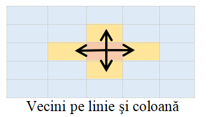
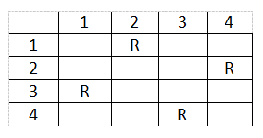
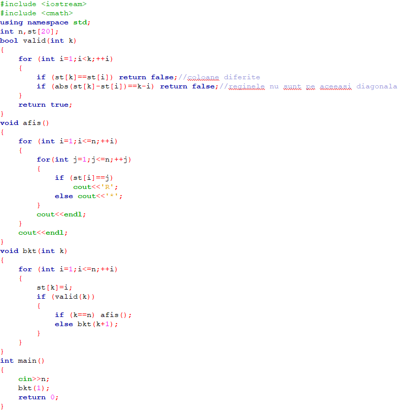
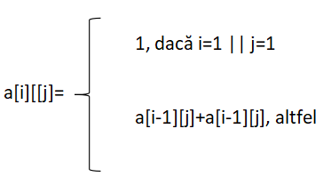

1.Algoritmul lui Fill
Acesta mai este numit şi algoritmul de umplere. Astfel, având în vedere enunţul precizat anterior, programul va determina numărul de continente.
Un prim pas pentru conceperea algoritmului, este identificarea vecinilor. Aşa cum precizează problema, elementele se învecinează pe linie sau pe coloană, deci pentru un element a[i][j] vom avea 4 vecini: a[i-1][j], a[i][j-1], a[i+1][j] şi a[i][j+1].
Astfel, o reprezentare a vecinilor lui a[i][j] este:

În acest sens, putem utiliza vectorii de coordonate sau de deplasare pentru a identifica mai uşor vecinii:
Totodată, trebuie să avem în vedere ca vecinii unui element să se afle în matrice.
Algoritmul lui Fill în C++:
2.Algoritmul lui Lee
Având în vedere problema enunţată mai sus, ni se dau dimensiunile matricei, numărul de copaci din parc, coordonatele fiecăruia, cât şi coordonatele porţilor. Aşadar, cerinţa problemei este aflarea numărului minim de dale necesar pentru construirea aleei.
În acest sens, vom folosi algoritmul lui Lee. Vom marca în matrice elementele libere cu 0, iar copacii cu -1. Poziţia de start va fi marcată cu 1. Pentru fiecare k=1,2,3,... vom analiza elementele marcate cu valoarea k şi vom marca toţi vecinii săi liberi şi nemarcaţi cu k+1.
Algoritmul lui Lee în C++:
3.Triunghiul lui Pascal cu matrice
Acesta este foarte utilizat în matematică la diverse probleme de combinatorică.
O reprezentare vizuală a acestuia este:
Se poate observa că fiecare element este egal cu suma celor două elemente vecine de deasupra.
Totodată, triunghiul poate fi reaşezat astfel:
Astfel, formula pentru fiecare termen al matricei este:
De asemenea, matematic vorbind, relaţia de mai sus este de fapt calculul combinărilor:
Aşadar, putem calcula linia n a triunghiului lui Pascal folosindu-ne de matrici, o soluţie care este mai eficientă decât calcularea propriu-zisă a combinărilor.
Algoritmul în C++ pentru afişarea liniei n din triunghiul lui Pascal:
4.Problema săriturii calului
Problema enunţată presupune afişarea unei matrici de n linii şi m coloane, fiecare element al matricei reprezentând valoarea pasului la care se ajunge în acel punct, sau 0 dacă nu s-a ajuns.
Rezolvarea poate fi scrisă în două moduri, atât folosind metoda Greedy, cât şi Backtracking. Cea care urmează a fi prezentată utilizează metoda Greedy.
Un prim pas în rezolvare este identificarea vecinilor, întrucât calul se deplasează pe tabla de şah în formă de L.
Principiul de rezolvare al problemei constă în găsirea pentru un element curent a[i][[j] a unui vecin cu număr minim de vecini.
Astfel, vom folosi vectorii de coordonate pentru a afla vecinii elementelor.
În mod similar, fiecare vecin trebuie să se afle în matrice.
Algoritmul în C++ pentru afişarea matricii corespunzătoare săriturii calului:
5.Problema reginelor
Problema presupune afişarea unei matrici de n linii şi n coloane ce conţine drept caractere R sau *, unde 'R' ilustrează poziţia ocupată de o regină, iar '*' reprezintă o poziţie liberă.
În rezolvarea problemei vom folosi metoda Backtracking-ului.
O posibilă soluţie a problemei:
Considerăm stiva st[] în care se reţine coloane pe care se găseşte reginade pe linia k.
Astfel, vom avea în vedere câteva condiţii:
- 1<=st[k]<=n
- st[k]!=st[i], oricare ar fi i∈[1,k-1](reginele sunt pe coloane diferite)
- |st[k]-st[i]|!=|k-i|(condiţia ca reginele să nu fie pe aceeaşi diagonală)
- k=n
Algoritmul în C++ pentru afişarea matricii corespunzătoare poziţionării celor n regine:
6.Numărul de drumuri în matrice
Problema presupune afişarea termenului a[n][m] din matricea A, ce reprezintă numărul de moduri de a ajunge în acel punct.
În rezolvarea problemei vom folosi metoda programării dinamice.
Astfel, se observă că orice element a[i][j] este, de fapt, a[i-1][j]+a[i][j-1], iar dacă i=1 sau j=1, atunci a[i][j]=1.
De exemplu, dacă avem n=3 şi m=4 matricea va fi:
Aşadar, formula pentru matrice este:
Algoritmul în C++ pentru determinarea numărului de drumuri din matrice:
7.Matrici de adiacenţă
Matricile sunt utile pentru reprezentarea în memorie a diverselor tipuri de grafuri.
Deşi nu reprezintă cea mai eficientă metodă, matricile sunt des utilizate în lucrul cu grafurile.
- Grafuri neorientate
- este o matrice pătratică, cu n linii şi n coloane, unde n este numărul de noduri al grafului
- aceasta conţine elemente din mulţimea {0,1}
- 1-există muchie de la i la j, 0-nu există muchie de la i la j
- este simetrică faţă de diagonala principală
- pe diagonala principală are doar elemente de 0, întrucât nu există muchie de la un nod la el însuşi, deci nu există bucle
- gradul unui vârf x este egal cu numărul de elemente de 1 de pe linia sau coloana x
- suma elementelor din matricea de adiacenţă este egală cu dublul numărului de muchii al grafului
Exemplu:
- Grafuri orientate
- este tot o matrice pătratică, cu n linii şi n coloane, unde n este numărul de noduri al grafului
- conţine doar 0 şi 1
- 1-există un arc de la i la j, 0-nu există arc de la i la j
- nu este simetrică faţă de diagonala principală
- pe diagonala principală are doar elemente de 0
- numărul de elemente de 1 de pe linia x reprezintă gradul exterior al nodului x
- numărul de elemente de 1 de pe coloana x reprezintă gradul interior al nodului x
Exemplu:
- Grafuri ponderate
- este tot o matrice pătratică, cu n linii şi n coloane, unde n este numărul de noduri al grafului
- aceasta conţine atât elemente nule, acolo unde nu există muchie de i la j, altfel elementul a[i][j] are o valoare mai mare sau egală cu 1
- pe diagonala principală are doar elemente de 0
Exemplu: